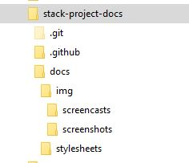

Using screenshots and typed code blocks
These guidelines are mostly intended for stack-project-docs internal use, to document directories, structures, files, and (for screencasts) procedures.
As a tech writing best practice, there are sometimes good reasons to show both screenshots and typed code blocks, and the directory-layout page is a strong example. The typed directory tree is the authoritative, copyable reference and the screenshot shows readers what the structure actually looks like in Windows Explorer and reassures them that the tree corresponds to a real working repository.
The screenshot can also offer a bonus by showing the date, file size, etc. in the detail view.
The directory-layout page screenshot is especially justified because this page seems to be doing double duty: (1) defining the project architecture and (2) helping re-orient in a new repository.
| Element | What it does best | Limitations |
|---|---|---|
| Typed directory tree in code block |
Exact paths, file names, hierarchy Easy copying, searching, Accessible to screen readers |
More abstract New user may not connect to File Explorer |
| Explorer screenshot | Orientation Visual confirmation Recognizability for Windows users Showing where folders sit in interface |
Not copyable / searchable Small text can be difficult to read Becomes stale when structure changes |
Make the purposes for images vs. typed blocks explicit, e.g.:
-
Start with a short statement of the intended repository structure.
-
Keep the directory tree in the code block as the complete reference.
-
Place the screenshot immediately after it.
-
Add an informative figure caption - what the screenshot is meant to establish.
Here's an example of the code - note that within the HTML wrapper (the <figure> tag) you must use HTML for markup rather than Markdown, e.g., outside the wrapper you can mark code using backticks but inside the wrapper you have to use <code>:
<figure markdown>

<figcaption>File Explorer view confirming the <code>docs/img</code> asset folders in the local <code>stack-project-docs</code> repository</figcaption>
</figure>Which renders as:

docs/img asset folders in the local stack-project-docs repositoryThe visible code block already supplies the detailed textual equivalent, so the alt text can remain focused on what only the screenshot adds: its File Explorer context and the visible expansion of docs/img.
Good alt text conveys the image’s relevant meaning rather than repeating adjacent text word for word.
When to use only one
Use only a typed tree when:
-
The page’s job is to define an exact canonical structure.
-
The hierarchy is likely to change often.
-
Readers will need to copy paths into Markdown, Git commands, configuration, or documentation.
-
The screenshot would duplicate the same information without adding interface-specific context.
Use only a screenshot when:
-
You are teaching a GUI action, such as “expand docs, then select img/screenshots.”
-
The point is the application’s state, labels, buttons, or visual cues — not the directory names as a formal specification.
-
A typed list would not show the important visual condition.
Maintain it cleanly
Because this is a documentation standards repository, adopt one rule:
Update the code-block tree whenever the structure changes and update or replace the screenshot only when its visible arrangement would mislead a reader.
That avoids turning every routine addition of an image, Markdown page, or stylesheet into a screenshot-maintenance chore.
Technical documentation should remain correct, current, referenceable, and maintainable - using version-controlled Markdown for the canonical description helps accomplish that.
Use descriptive, task-based names, e.g.:
screenshots/
affinity-export-panel.jpg
github-desktop-commit.jpg
mkdocs-nav-structure.jpgThen a workflow page can pair a brief written procedure with a screenshot at key decision points and a screencast for the full sequence. That gives readers a searchable, copyable reference while still offering the visual “show me exactly how” version.
Screencasts
Screencasts will mostly be used to demonstrate procedures, such as working with images in Affinity and working with videos in Shotcut. This section will get more filled out as this repository becomes more mature and tools are standardized.
As for images, use descriptive, task-based names for screencasts, e.g.:
screencasts/
affinity-crop-and-export.mp4
github-desktop-rename-case.mp4
shotcut-caption-workflow.mp4ShareX
ShareX is the tool used for screenshots and screencasts for this project. See ShareX notes.
HTML / css
More information on using HTML and css for the projects is in the vintage reels workspace mkdocs-html-css/